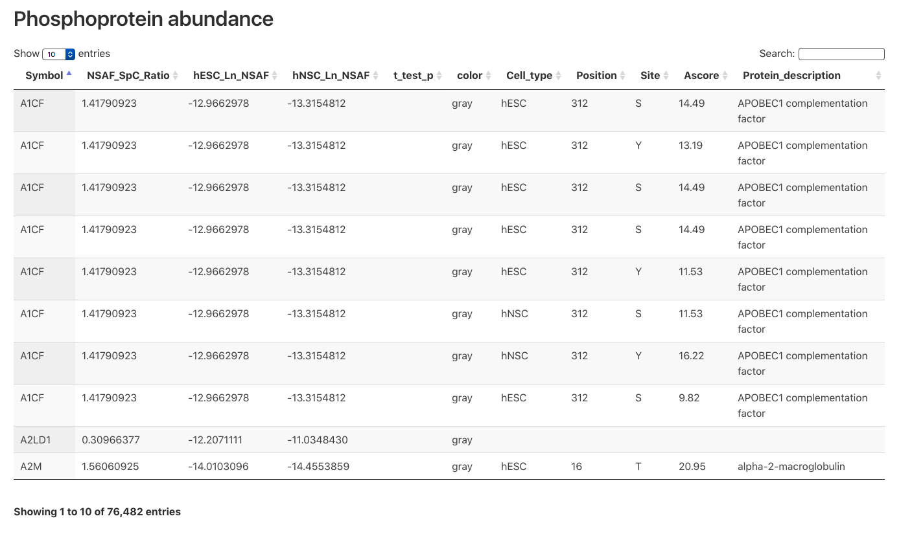

<div class = "fdg">
<mat-sidenav-container class="sctl-graph-container" [hasBackdrop]="false">
    <mat-sidenav #graphMenu mode="over"
                 class="menu-drawer">
      <app-graph-menu
        (optionsChange)="filterGraph($event)"
        (close)="graphMenu.close()"
      ></app-graph-menu>
    </mat-sidenav>
    <mat-sidenav-content>
      <button mat-button (click)="graphMenu.toggle()" class="close-button" *ngIf="graphMenu.opened"><mat-icon>arrow_left</mat-icon> close</button>
      <button mat-button (click)="graphMenu.toggle()" class="open-button"><mat-icon>arrow_right</mat-icon> open</button>
        <div class = "info-panel" cdkDrag>
    <app-node-details-box></app-node-details-box>
  </div>
  <app-force-directed-graph cdkDropList></app-force-directed-graph>
    </mat-sidenav-content>
</mat-sidenav-container>
</div>
<div class="table-image">
  
</div>

